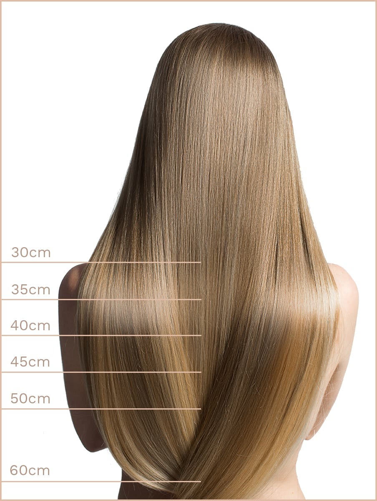

The main point of cold fusion hair extension technique is bonding of natural hair strands with donor ones without chemicals or heat. Thanks to the use of 100% safe materials (glue capsules, micro-rings, tapes), the bonding becomes strong and non-visible, donor strands look like real ones, and the new hairstyle lasts long. Basic methods of cold fusion hair extension include the following:
- I-tip method;
- Weft hair extension;
- Tape-ins hair extension;
- Clip-on hair extension.
I tip hair extension is also called ‘Micro-ring hair extension’, and supposes using ceramic metal micro-beads of rings connecting donor strands with user’s own ones. A master threads donor strands into the middle of a ring/bead with a loop bead tool and clamps them. Micro rings can be selected to match any hair colour and make them invisible on the user’s hair. This type of hair extension is absolutely harmless, and the connected hair strands can be dyed, exposed to temperature fluctuations and perming. During the correction, artificial strands are pulled closer to hair roots and can be easily removed by releasing the rings with pliers.
WeftHair weft application is the process where masters use the whole nets (tresses) of sewn hair instead of separate hair strands – tresses can be cut to get the necessary length. Tress up hair extension is done the following way: micro-braid is made along the scalp, then tresses are connected to it. Only a professional master can make micro braids strong enough to eliminate overstrain and discomfort for the client. Alternatively, some masters extend hair by sewing: the braid formed of client’s hair is sewn round with threads. As a result, a tress is sewn into the hair with special stitches.
Tape-in hairAttaching these extensions means that artificial hair strands are attached with the help of sticky tape. The technique supposes applying tapes with different length of strands on different levels of the scalp to achieve the optimal effect. Tape-ins can be removed by spraying a special agent, so the correction of tape-in hair extension is quite simple. Such hair strands can be used repeatedly – only the tape should be replaced. Tape in hair extension is corrected in 1-2 months. During the correction procedure, the master will simply remove the tape from hair to wash it, which won’t affect it at all.
Clip-on hairHair extension on clips is a set of hairpins where artificial hair strands are put right under the user’s own hair. The length of natural hair hides clips, which allows the user to enjoy voluminous hair. Such technology presupposes removing hair clips before sleep, which means it’s suitable even for people with sensitive scalp. The main advantage of this technique is fast speed of procedure execution: anyone can acquire a new hairstyle in a matter of a few minutes.
There are different methods of hot hair extension, yet the most widespread one is the Italian technology, also known as hot capsule hair extension.
Hot capsule hair extension is considered to be the safest and most reliable method. In this case, ends of artificial locks are already covered with keratin oil. During the process, the master needs to attach the artificial locks to natural ones and heat the connection spot with a flat iron (up to 150-180 °C). Thus, a keratin capsule forms and holds the hair. Artificial strands are removed with the help of a special gel that softens the capsule.
The weight of keratin capsulesDepending on the length of locks keratin capsules have a different mass.
- One lock of long hair (60+ cm) in a capsule will weigh around 0,72-0,75 grams;
- For average length (45-50 cm), one lock will weigh 0,68 grams;
- For short length (35-40 cm), one lock will weigh 0,60-0,64 grams.
This value should be used to calculate the number of hair strands or bonds you will need. For instance, if you want to get 120 grams of 60 cm locks, the calculation will be the following: 120 / 0,72 = 166 bonds.
The hair should be corrected in 1-4 months after the extension. Artificial locks are removed by the appropriate method, then, can be attached again. Depending on the quality of Slavic hair and master’s experience, hair extensions can be used up to 7 times.
It’s crucial to note that hair should get rest from extensions after being exposed to a serious strain and load during 2-3 weeks. After any type of hair extension, a woman should go through the course of reparative procedures (masks, wrapping, mesotherapy). The cost of correction is much lower than the price of the primary hair extension procedure.
To fix hair strands on clips, follow these steps:
Divide hair in two parts by a finger or a rake comb making a horizontal line from the left temple to the right, separate the upper part of the hair and fix it with a hair clipper or an elastic.
Open clips on the artificial hair strands. Apply the upper part of strands to the horizontal line you’ve just made, and press accurately for clips to seat in.
Release the upper part of the hair. Make hair fluffy to mix the natural and artificial locks.
When selecting hair extensions, one should understand that it’s hard to find something matching the natural hair colour by 100%. That particularly applies to hair with unnatural shades (for instance, beige blonde, or golden-gray blonde). If you can’t find a suitable shade that matches your natural hair, you can tone the artificial strands.
LengthOur basic recommendation is to extend your hair with hair extensions adding no more than twice of your original height albeit it still depends completely on your personal choice. For the first time, we consider 40-50 cm length of extensions as the most suitable option. This length will make your hair extend approximately to the level between your armpits to elbows. Note that one and the same length looks different depending on the person’s height.
You can compare your hair length to the illustration below to find out the exact desired size of extensions, our model is 5.5 Ft (1.7 m).
First, you need to distinguish the types of extensions and understand that the volume of hair for extensions depends strictly on the desired result:
- Increase the volume of hair, while maintaining its length;
- Increase the length without changing the volume;
- Boost all together.
In the first case, the boosting of hair volume with full preservation of length and type of haircut can be partial or complete. In the first case, donor strands are attached locally. This is done to compensate for the visual lack of volume and to put focus on some certain elements of the haircut. In the case of full extension, artificial strands are distributed evenly on the temporal and lower head zones, but for some hairstyles, masters anchor locks on the upper occipital part of the head.
When increasing the length and maintaining the volume, it is important to find the balance between the number of artificial and natural curls in order to make the entire hairstyle longer, while evenly distributing the volume. The length of the locks can vary from 30 to 70 centimetres.
In the third case, the master combines both methods and adds more thickness and length, which is achieved through the use of strands of various lengths, which are carefully combined.
As you see, the amount needed is very personal and based on your own feelings. Let us assume that 1 lock equals 1 gram. In this case, we recommend to apply 60-80 locks for an extra volume, 80-110 locks for a mixed improvement of length without losing the volume and 120-150 locks for an extra fine extension of both length and volume.
Extension hair needs particular care because it gets damaged easier, and the natural hair can be harmed. To avoid this, follow the general care guidelines:
Appropriate hairbrushThe perfect hairbrush contains natural pile that is soft, without stiff prongs that may damage the structure of extended hair. Ideally, consider having a professional hairbrush for hair extensions, which has two rows of bristles. In this case, the more prominent prongs will brush the locks while small teeth will make hair shinier. We also recommend choosing the hairbrush without Ball-Tipped bristles on it as they may pull the strands out of extended hair. Always hold hair near the roots while combing.
ShampooWash hair with a special shampoo for hair extensions (for example, Keune or Constant). If you want to try a different shampoo, make sure it does not contain alcohols, sulfates and a large amount of oils, and its pH level is neutral (around 5.5). If your own hair and artificial strands need different shampoos, you can apply both, but do it selectively, separating your strands from the artificial ones. In any case, do not use shampoos for dry hair: they contain ingredients that can make hair extensions slim and damage the attachments of the strands.
Washing and dryingDo not throw hair forward during washing to avoid tearing off the capsules, Also, do not wash them against the growth line and don’t apply a of a large amount of detergent on the roots. It is necessary to dry the hair with a towel kept on the head for about 5-10 minutes, and then use a cold hairdryer only. If the technology of hair extension allows for using heat, feel free to blow-dry hair, but only for a couple of minutes.
Baths and saunaMost often, women with hot hair extensions aren’t allowed to visit such places because heat can melt the keratin capsule – hair strands will fall off immediately. However, if the technology of hair extension (cold hair extension) allows for visiting baths and saunas, it’s recommended to wear a cap made of natural materials (no plastic or rubber caps) and keep away from the firepot. A bathing cap will protect hair extensions from becoming dry because of chlorine in swimming pools. It will also protect you against high temperatures in sauna or solarium that can harm tapes and capsules.
Masks and balmsHair extensions do not have natural nourishing that comes from the hair follicles. Hence, external nutrition should be given. We recommend avoiding shampoos for dry hair. Products for greasy hair, sulfate-free and ethanol-free shampoos with neutral pH level will do. Pay attention to the hair masks in order to prolong the lifespan of your extensions as much as possible. Among the professional hair products, revitalising keratin-based masks is an excellent choice though other solutions can be also used. Apply the mask after every washing for 5-10 minutes bypassing the places where the hair extensions are attached.
Hairstyling and thermal impactAsk your master whether it’s allowed to use a flat iron or a curling iron in your specific case. General recommendations are the following: blow dry, straightening or curling with irons are not prohibited for extension hair, but it’s important to use sprays or other blocks (especially for sensitive hair) and not to apply heat on the connection spot. Capsule extension hair should be treated with maximum accuracy. It’s not recommended to make tight braids with extended hair and sleep with damp hair.
After your order has been processed by our manager you get an instant money request by email where you put your payment details to confirm the purchase. You will receive an order number and order details shortly after finishing the payment.
We accept PayPal and SWIFT bank transfers. For EU banks and common SEPA (Single Euro Payments Area) the money transfer is possible without using SWIFT. Let us know if your payment habits are different and we will find a suitable option for both of us.
VATThe UK and European Union area: the tax is applied for final consumers (natural person). The tax is not added for all VAT liable companies.
The U.S. and Canada: VAT is not added.
For other cases, send us an email and we will provide the information within 2 business days.
Standard worldwide shipping includes a door-to-door delivery to your location. The delivery comes in the next possible day from the date of departure. Experience has shown that the average shipping time is 2-4 days for the UK and EU countries. The suggested time does not necessarily mean that it is not probable for the parcel to arrive earlier than the estimated time.
The average shipping time for the U.S and Canada is 3-6 days. The majority of delays in shipping that may arise are due to customs clearance, which might be done incorrectly by the receiver. We always try to eliminate any issues with customs clearance and helps to prevent any obstacles, however, the sender can not promise the exact delivery time and the absence of complications at the border.
The package arrival may be delayed due to national holidays or force majeure circumstances. The tracking number is always provided by us.
In the majority of cases, customs clearance can also be performed by the carrier. The costs start from 20 EUR per shipment.
Other shipping options, possibilities to collect the goods from the pick-up points, receiving the products on Saturday can be discussed individually. Shipping costs are not included in the price of the product in the Hair Catalogue.